Networks_HW2
KiseokUchicago
2021-04-11
Last updated: 2021-04-15
Checks: 7 0
Knit directory: Networks_HW_S2021/
This reproducible R Markdown analysis was created with workflowr (version 1.6.2). The Checks tab describes the reproducibility checks that were applied when the results were created. The Past versions tab lists the development history.
Great! Since the R Markdown file has been committed to the Git repository, you know the exact version of the code that produced these results.
Great job! The global environment was empty. Objects defined in the global environment can affect the analysis in your R Markdown file in unknown ways. For reproduciblity it’s best to always run the code in an empty environment.
The command set.seed(20210409) was run prior to running the code in the R Markdown file. Setting a seed ensures that any results that rely on randomness, e.g. subsampling or permutations, are reproducible.
Great job! Recording the operating system, R version, and package versions is critical for reproducibility.
Nice! There were no cached chunks for this analysis, so you can be confident that you successfully produced the results during this run.
Great job! Using relative paths to the files within your workflowr project makes it easier to run your code on other machines.
Great! You are using Git for version control. Tracking code development and connecting the code version to the results is critical for reproducibility.
The results in this page were generated with repository version 72c2816. See the Past versions tab to see a history of the changes made to the R Markdown and HTML files.
Note that you need to be careful to ensure that all relevant files for the analysis have been committed to Git prior to generating the results (you can use wflow_publish or wflow_git_commit). workflowr only checks the R Markdown file, but you know if there are other scripts or data files that it depends on. Below is the status of the Git repository when the results were generated:
Ignored files:
Ignored: .Rproj.user/
Untracked files:
Untracked: data/Chesapeake_bay_links.csv
Untracked: data/Chesapeake_bay_nodes.csv
Untracked: data/Dunne2013PBioSupData.xlsx
Untracked: data/M_PA_003.csv
Untracked: data/Otago_Data_Links.csv
Untracked: data/Otago_Data_Nodes.csv
Untracked: data/Ural_valley_A_HP_048.csv
Untracked: data/vizentin-bugoni_et_al_2016_complementary.xlsx
Untracked: data/~$Dunne2013PBioSupData.xlsx
Note that any generated files, e.g. HTML, png, CSS, etc., are not included in this status report because it is ok for generated content to have uncommitted changes.
These are the previous versions of the repository in which changes were made to the R Markdown (analysis/Networks_HW2.Rmd) and HTML (docs/Networks_HW2.html) files. If you’ve configured a remote Git repository (see ?wflow_git_remote), click on the hyperlinks in the table below to view the files as they were in that past version.
| File | Version | Author | Date | Message |
|---|---|---|---|---|
| Rmd | 72c2816 | KiseokUchicago | 2021-04-15 | HW2 complete |
| html | 889de1a | KiseokUchicago | 2021-04-14 | Build site. |
| Rmd | a62bd87 | KiseokUchicago | 2021-04-14 | HW2 update |
| html | 7a76819 | KiseokUchicago | 2021-04-12 | Build site. |
| Rmd | 64a8b31 | KiseokUchicago | 2021-04-12 | HW2 |
| html | 4518d0c | KiseokUchicago | 2021-04-12 | Build site. |
| Rmd | 1d7c1af | KiseokUchicago | 2021-04-12 | HW2 |
Homework2 (Basic structural metrics)
Coding assignment for ECEV 44500 Networks in Ecology and Evolution
Professor: Mercedes Pascual, Sergio A. Alcala Corona
Student: Kiseok Lee
# libraries
library(igraph)
library(bipartite)
library(dplyr)
library(ggplot2)1. Introduction
There is an endless number of metrics for network structure in the general network science, and several more developed particularly for ecological networks. We will naturally focus on the most relevant and popular ones. It is very useful however to have a reference for the most popular ones. In the context of ecology, two papers are particularly useful:
Dormann CF, Fründ J, Blüthgen N, Gruber B. Indices, graphs and null models: analyzing bipartite ecological networks. The Open Ecology Journal. 2009;2: 7–24.
Delmas E, Besson M, Brice M-H, Burkle LA, Dalla Riva GV, Fortin M-J, et al. Analysing ecological networks of species interactions: Analyzing ecological networks. Biol Rev. 2019;94: 16–36.
2. Unipartite networks metrics
# load data
# First, load the data
otago_nodes <- read.csv('data/Otago_Data_Nodes.csv')
otago_links <- read.csv('data/Otago_Data_Links.csv')
otago_web <- graph.data.frame(otago_links, vertices = otago_nodes, directed = T)
# food web
chesapeake_nodes <- read.csv('data/Chesapeake_bay_nodes.csv', header=F)
names(chesapeake_nodes) <- c('nodeId','species_name')
chesapeake_links <- read.csv('data/Chesapeake_bay_links.csv', header=F)
names(chesapeake_links) <- c('from','to','weight')
ches_web <- graph.data.frame(chesapeake_links, vertices = chesapeake_nodes, directed = T)
plot(ches_web, edge.width=log(E(ches_web)$weight)/2, layout=layout.circle) Otago web: Mouritsen KN, Poulin R, McLaughlin JP, Thieltges DW. Food web including metazoan parasites for an intertidal ecosystem in New Zealand. Ecology. Wiley Online Library; 2011;92: 2006–2006., with a description here.
Chesapeake bay: Baird D, Ulanowicz RE. The Seasonal Dynamics of The Chesapeake Bay Ecosystem. Ecol Monogr. Ecological Society of America; 1989;59: 329–364. Data set is from here
2.1 Degree and strength
2.1.1. Unweighted degree
deg_dist_out <- igraph::degree(otago_web, mode = 'out') # igraph calculates the out-degree distribution
deg_dist_in <- igraph::degree(otago_web, mode = 'in') # and also the in-degree distribution
# Now we use a dataframe to make the plot.
df <- data.frame(deg=c(deg_dist_out,deg_dist_in), direction=c(rep('out',length(deg_dist_in)),rep('in',length(deg_dist_in))))
ggplot(df, aes(deg, fill=direction)) + geom_histogram(alpha=0.3)
Problem 1. Transform the Otago web to an adjacency matrix (based on the previous lab), and then calculate node in-degree and out-degree using the matrix (i.e. write a short code).
# make adjacency matrix
A_ota <- as_adjacency_matrix(otago_web)
class(A_ota)[1] "dgCMatrix"
attr(,"package")
[1] "Matrix"dim(A_ota)[1] 180 180# in-degree
in_degree <- rep(0,dim(A_ota)[1])
for (i in 1:dim(A_ota)[1]){
in_degree[i] <- sum(A_ota[i,])
}
in_degree [1] 0 0 0 13 48 0 48 17 19 19 4 2 2 1 4 2 4 4 24 2 2 31 2 2 2
[26] 2 2 2 2 2 2 5 14 14 14 4 3 18 2 21 46 66 66 2 3 3 2 17 2 2
[51] 3 2 2 2 2 16 13 13 13 19 3 4 4 4 4 4 31 4 31 31 24 30 3 31 30
[76] 2 2 2 4 4 2 2 2 2 2 2 2 1 18 18 67 2 2 17 17 16 5 1 2 55
[101] 1 55 7 7 21 27 48 53 15 49 45 20 4 71 6 48 20 15 27 2 16 17 17 10 1
[126] 0 12 7 1 0 4 7 1 0 8 7 5 0 3 6 1 0 2 7 7 0 6 6 2 0
[151] 1 6 6 0 1 6 1 0 1 3 1 0 3 5 4 7 4 7 4 7 4 1 1 1 0
[176] 7 1 0 3 5# out-degree
out_degree <- rep(0,dim(A_ota)[2])
for (j in 1:dim(A_ota)[2]){
out_degree[j] <- sum(A_ota[,j])
}
out_degree [1] 21 70 23 6 38 62 0 0 0 0 9 15 15 7 12 14 9 9 12 17 17 18 10 6 6
[26] 6 2 9 6 16 16 10 26 26 26 25 27 14 1 4 24 24 24 4 17 17 4 10 12 13
[51] 14 26 13 13 0 0 0 0 0 0 12 13 9 7 8 11 11 8 4 3 12 4 17 12 16
[76] 7 11 7 9 9 9 18 19 18 18 29 22 20 12 12 19 4 8 8 8 7 0 4 2 11
[101] 13 10 1 1 1 1 9 10 2 12 12 7 2 7 2 3 3 5 3 1 0 6 6 0 12
[126] 5 42 0 12 36 19 0 12 5 35 1 10 5 11 0 12 6 18 0 9 5 13 0 7 6
[151] 18 0 10 6 18 0 12 5 18 11 15 5 0 7 18 0 18 1 18 4 17 11 0 18 5
[176] 0 5 3 11 9# Now we use a dataframe to make the plot.
df_A <- data.frame(deg=c(out_degree,in_degree), direction=c(rep('out',length(out_degree)),rep('in',length(in_degree))))
ggplot(df_A, aes(deg, fill=direction)) + geom_histogram(alpha=0.3, binwidth=1)2.1.2. Weighted strength
# degree
deg_dist_out <- igraph::degree(ches_web, mode = 'out')
deg_dist_in <- igraph::degree(ches_web, mode = 'in')
df <- data.frame(deg=c(deg_dist_out,deg_dist_in), direction=c(rep('out',length(deg_dist_in)),rep('in',length(deg_dist_in))))
ggplot(df, aes(deg, fill=direction))+geom_histogram(alpha=0.3,binwidth=1)Strength
s_dist_out <- igraph::strength(ches_web, mode = 'out')
s_dist_in <- igraph::strength(ches_web, mode = 'in')
df <- data.frame(s=c(s_dist_out,s_dist_in),direction=c(rep('out',length(s_dist_in)),rep('in',length(s_dist_in))))
ggplot(df, aes(s, fill=direction))+geom_histogram(alpha=0.3)Problem 2. Can discrepancies in in-degree and out-degree (or strength) give us some ecological insight?
Yes. The out-degree indicates that the node’s degree in higher if the node is consumed by a larger number of predators, whereas in-degree indicates that the node’s degree is higher if the node in consuming a larger number of preys. Therefore, larger out-degree means that the node is a widely consumed prey and larger in-degree means that the node is more of a generalist predator. The discrepancy simply means that consuming behavior of predators show different tendency compared to resource’s consumption range.
However, for strength, there is lesser discrepancy. This means that when the interaction is weighted the discrepancy disappears.
2.2 Clustering coefficient
# The ratio of the triangles connected to the vertex and the triples centered on the vertex.
transitivity(otago_web, type = 'local') [1] 0.20952381 0.09068323 0.21739130 0.28654971 0.16169631 0.09360127
[7] 0.10195035 0.20588235 0.26315789 0.26315789 0.10256410 0.30882353
[13] 0.30882353 0.00000000 0.13333333 0.38333333 0.20512821 0.20512821
[19] 0.38412698 0.58479532 0.58479532 0.23894558 0.43939394 0.21428571
[25] 0.21428571 0.21428571 0.00000000 0.38181818 0.21428571 0.34640523
[31] 0.34640523 0.17142857 0.29743590 0.29743590 0.29743590 0.30049261
[37] 0.30344828 0.28225806 0.00000000 0.27000000 0.17308489 0.12359551
[43] 0.12359551 0.40000000 0.42105263 0.51052632 0.20000000 0.39886040
[49] 0.38461538 0.33333333 0.24264706 0.46825397 0.33333333 0.33333333
[55] 0.00000000 0.22500000 0.00000000 0.00000000 0.00000000 0.26315789
[61] 0.31428571 0.11764706 0.10256410 0.20000000 0.24242424 0.15238095
[67] 0.21718931 0.24242424 0.30924370 0.27807487 0.38412698 0.24242424
[73] 0.60000000 0.22480620 0.22318841 0.50000000 0.39743590 0.13888889
[79] 0.17948718 0.17948718 0.20000000 0.48421053 0.40000000 0.21052632
[85] 0.21052632 0.42365591 0.31159420 0.17142857 0.24367816 0.24367816
[91] 0.12667579 0.73333333 0.35555556 0.42666667 0.42666667 0.45059289
[97] 0.40000000 0.40000000 0.00000000 0.12121212 0.32967033 0.13269231
[103] 0.28571429 0.28571429 0.28138528 0.26984127 0.13909774 0.10803891
[109] 0.24264706 0.12896175 0.10776942 0.17094017 0.20000000 0.06926407
[115] 0.25000000 0.10039216 0.15019763 0.04736842 0.10114943 0.33333333
[121] 0.00000000 0.19762846 0.19762846 0.00000000 0.60256410 0.70000000
[127] 0.24178896 0.00000000 0.60256410 0.22539683 0.30039526 0.00000000
[133] 0.60256410 0.70000000 0.30011074 0.00000000 0.70476190 0.70000000
[139] 0.27472527 0.00000000 0.60256410 0.46666667 0.44736842 0.00000000
[145] 0.69166667 0.70000000 0.34502924 0.00000000 0.80555556 0.46666667
[151] 0.48538012 0.00000000 0.69166667 0.46666667 0.48538012 0.00000000
[157] 0.39743590 0.70000000 0.48538012 0.27472527 0.50000000 0.70000000
[163] 0.00000000 0.09090909 0.29437229 0.00000000 0.32900433 0.00000000
[169] 0.32900433 0.12727273 0.35238095 0.31818182 NaN 0.48538012
[175] 0.70000000 0.00000000 0.80000000 0.66666667 0.27472527 0.16483516histogram(transitivity(otago_web, type = 'local'))# The ratio of the triangles and the connected triples in the whole graph
transitivity(otago_web, type = 'global') [1] 0.2203512Problem 3. What can a high local clustering coefficient indicate in a food web?
I could mean that the local interactions are denser and more interconnected.
2.3 Geodesics
Geodesics (shortest paths) are at the basis of many metrics, including some centralities. We can obtain a distance table matrix (between pairs of nodes).
geodesics <- distances(otago_web, mode = 'all') # Assume an undirected graph.Because this is also an unweighted network, the matrix values indicate how many _hops_ it would take to arrive from one node to another in the shortest way.
#geodesics
geodesics[1:5,1:5] # just visualize a sample of the Shortest-paths table of the whole network 1 2 3 4 5
1 0 2 2 1 1
2 2 0 2 2 1
3 2 2 0 2 1
4 1 2 2 0 1
5 1 1 1 1 02.4 Node centralities
There are many centrality metrics, each with dozens of variations. Let’s take a look at the few common ones. Note that it is common to normalize the centrality measures. This is particularly helpful when comparing across networks. Read more about that normalization in the help and in Delmas et al (2018).
# Assume undirected networks
CC <- igraph::closeness(otago_web, mode = 'all', normalized = T)
BC <- igraph::betweenness(otago_web, directed = F, normalized = T)
EC <- igraph::eigen_centrality(otago_web, directed = F, scale = T)
EC <- EC$vector
# Ploting the web, re-sizing nodes by centrality (e.g. the betweenness centrality). Try to do the same by using other centralities.
V(otago_web)$BC <- BC
par(mar=c(0,0,0,0))
plot(otago_web, vertex.size=BC*100, vertex.label=NA, edge.arrow.width=0.5, edge.arrow.size=0.5, edge.curved=0.5, layout=layout.circle)# Use CC
V(otago_web)$CC <- CC
par(mar=c(0,0,0,0))
plot(otago_web, vertex.size=CC*10, vertex.label=NA, edge.arrow.width=0.5, edge.arrow.size=0.5, edge.curved=0.5, layout=layout.circle)# Use EC
V(otago_web)$EC <- EC
plot(otago_web, vertex.size=EC*10, vertex.label=NA, edge.arrow.width=0.5, edge.arrow.size=0.5, edge.curved=0.5, layout=layout.circle)Problem 4. Try to calculate the centrality measures for directed food webs.
# Directed
# Assume directed networks
CCd <- igraph::closeness(otago_web, mode = c('out'), normalized = T)
BCd <- igraph::betweenness(otago_web, directed = T, normalized = T)
ECd <- igraph::eigen_centrality(otago_web, directed = T, scale = T)
ECd <- ECd$vector
# Use BCd
V(otago_web)$BCd <- BCd
par(mar=c(0,0,0,0))
plot(otago_web, vertex.size=BCd*100, vertex.label=NA, edge.arrow.width=0.5, edge.arrow.size=0.5, edge.curved=0.5, layout=layout.circle)# Use CCd
V(otago_web)$CCd <- CCd
par(mar=c(0,0,0,0))
plot(otago_web, vertex.size=CCd*100, vertex.label=NA, edge.arrow.width=0.5, edge.arrow.size=0.5, edge.curved=0.5, layout=layout.circle)# Use EC
V(otago_web)$ECd <- ECd
plot(otago_web, vertex.size=ECd*10, vertex.label=NA, edge.arrow.width=0.5, edge.arrow.size=0.5, edge.curved=0.5, layout=layout.circle)Problem 5. Can you think of an ecological interpretation for each of these measures? Some intuition is given in the references by Martín-González et al. (2010) and Delmas et al. (2019).
(All citing from Delmas et al. (2019) and Martín-González et al. (2010)) - Closeness centrality: It is a global measure in that, although defined at the species level, it accounts for the structure of the entire network. It is based on the shortest path length between pairs of species and thus indicates how rapidly/efficiently a node is likely to influence the overall network.
- Betweenness centrality: This measure is ideal to study the influence of species loss on fragmentation processes, for example nodes with high CB values are considered as module connectors in modular networks.
- Eigenvector centrality: This centrality is akin to a simulation of flow across interactions, in which each species influences all of its partners simultaneously. It then measures the relative importance of species by assigning them a score on the basis that an interaction with more influential species contributes more to a species’ score than the same interaction with a low‐scoring species (Allesina & Pascual, 2009).
- Therefore, it could be said that each measures has it’s own strength: closeness (reflects shortest path), betweenness (reflect fragmentation process/modular role), eigenvector (reflects how much the node is connected to influential species)
Problem 6. What do you think would be the correlation beween these measures? Test it!
library("ggpubr")
# use undirected centralities
df_cen <- data.frame(BC=BC,CC=CC,EC=EC)
# histograms
histogram(df_cen$BC, breaks=20, main="Betweenness")histogram(df_cen$CC, breaks=20, main="Closeness") # close to normal distribution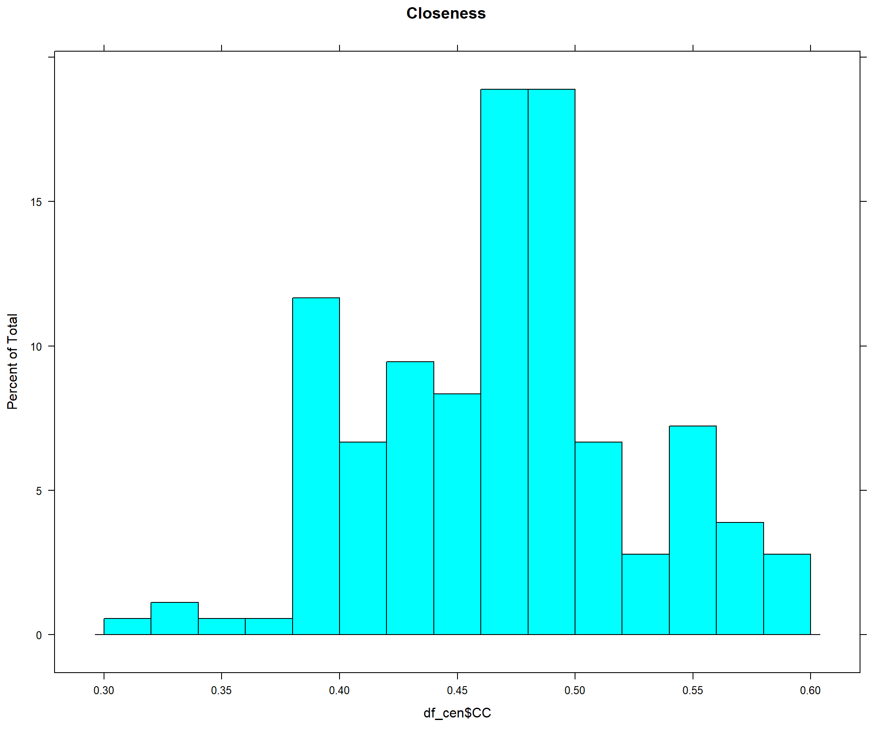
histogram(df_cen$EC, breaks=20, main="Eigenvector")# Shapiro-Wilk normality test
shapiro.test(df_cen$BC) # W = 0.49555, p-value < 2.2e-16 (not normally distributed alpha 0.05)
Shapiro-Wilk normality test
data: df_cen$BC
W = 0.49555, p-value < 2.2e-16shapiro.test(df_cen$CC) # W = 0.98342, p-value = 0.03119 (not normally distributed alpha 0.05)
Shapiro-Wilk normality test
data: df_cen$CC
W = 0.98342, p-value = 0.03119shapiro.test(df_cen$EC) # W = 0.89281, p-value = 4.269e-10 (not normally distributed alpha 0.05)
Shapiro-Wilk normality test
data: df_cen$EC
W = 0.89281, p-value = 4.269e-10# qqplots
ggqqplot(df_cen$BC, ylab = "Betweenness")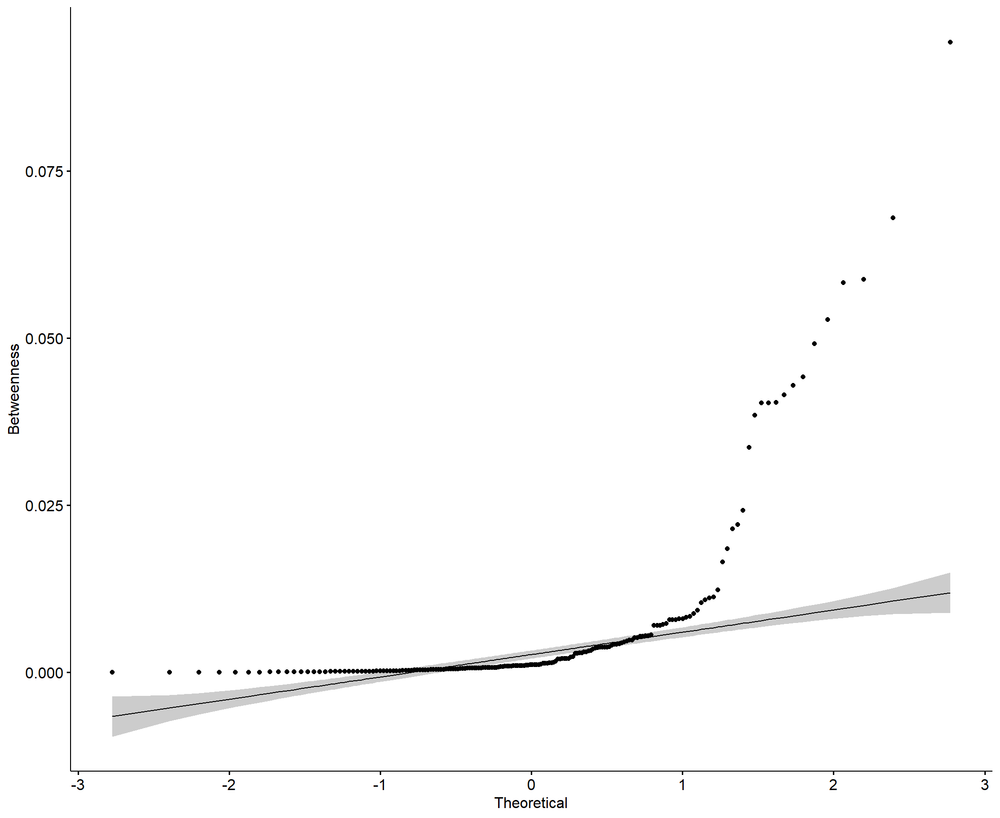
ggqqplot(df_cen$CC, ylab = "Closeness")ggqqplot(df_cen$EC, ylab = "Eigenvector")# since the centrality measures are not normally distributed, let's use Kendall rank correlation coefficient
res1 <-cor.test(df_cen$BC, df_cen$CC, method = "kendall")
res1
Kendall's rank correlation tau
data: df_cen$BC and df_cen$CC
z = 10.592, p-value < 2.2e-16
alternative hypothesis: true tau is not equal to 0
sample estimates:
tau
0.5357445 res2 <-cor.test(df_cen$BC, df_cen$EC, method = "kendall")
res2
Kendall's rank correlation tau
data: df_cen$BC and df_cen$EC
z = 10.622, p-value < 2.2e-16
alternative hypothesis: true tau is not equal to 0
sample estimates:
tau
0.5343096 res3 <-cor.test(df_cen$CC, df_cen$EC, method = "kendall")
res3
Kendall's rank correlation tau
data: df_cen$CC and df_cen$EC
z = 13.687, p-value < 2.2e-16
alternative hypothesis: true tau is not equal to 0
sample estimates:
tau
0.6908704 # BC and CC
ggscatter(df_cen, x = "BC", y = "CC",
add = "reg.line", conf.int = TRUE,
cor.coef = TRUE, cor.method = "kendall",
xlab = "Betweenness", ylab = "Closeness")# BC and EC
ggscatter(df_cen, x = "BC", y = "EC",
add = "reg.line", conf.int = TRUE,
cor.coef = TRUE, cor.method = "kendall",
xlab = "Betweenness", ylab = "Eigenvector")# CC and EC
ggscatter(df_cen, x = "CC", y = "EC",
add = "reg.line", conf.int = TRUE,
cor.coef = TRUE, cor.method = "kendall",
xlab = "Closeness", ylab = "Eigenvector")
CC and EC shows higher correlation than between BC-CC, BC-EC.
Problem 7. Which are the most central species in the network? Do they have anything in common?
To know which nodes have the highest centrality, we will use all 3 measures. According to the graph below, 5, 43, 100, 114, 2, 127, 102, 110 nodes are high candidates.
The common thing is that they all have high Eigenvector centrality. This makes sense because Eigenvector centrality is contingent upon the importance (centrality) of each other.
# install.packages("scatterplot3d")
library("scatterplot3d")
scatterplot3d(df_cen, pch = 16, color="steelblue", angle = 29, type="h")
s3d <- scatterplot3d(df_cen, pch = 16, color="steelblue", angle = 29, type="h")
text(s3d$xyz.convert(df_cen), labels = rownames(df_cen),
cex= 0.8, col = "red")2.4 n-node sub-graphs (aka motifs)
These are sub-structural patterns composing a network, typically only meaningful in directed networks. There are 16 kinds of 3-node subgraphs. See them by calling help: ?triad.census. Let’s plot them.
par(mfrow=c(4,4), mar=c(.75,.75,.75,.75))
for (i in 0:15){ # note that counting starts at 0
plot(graph_from_isomorphism_class(size = 3, number = i),
edge.arrow.size = 0.4,
edge.color='black',
main = i + 1)
box(col='red')
}Each of these different classes of subgraphs can have an ecological meaning. For example, #3 means that two prey share a predator and #5 is a trophic chain. It is therefore insightful to quantify how many of each kind are in the food web.
motifs(otago_web) #absolute numbers [1] NA NA 12506 NA 10956 491 22120 3434 533 2287 117 18
[13] 57 376 100 49motifs(otago_web)/count_motifs(otago_web) # Proportion [1] NA NA 0.2357665334 NA 0.2065455094
[6] 0.0092564663 0.4170122917 0.0647387075 0.0100482618 0.0431151497
[11] 0.0022057160 0.0003393409 0.0010745796 0.0070884549 0.0018852274
[16] 0.0009237614Problem 8. What is the dominant sub-graph in the Otago food web? What is its ecological meaning?
df_motif <- data.frame(relative_abun=motifs(otago_web)/count_motifs(otago_web))
df_motif <- tibble::rownames_to_column(df_motif, var='motif_n')
m1 <- ggplot(data=df_motif, aes(x=motif_n, y=relative_abun)) + geom_bar(stat="identity") + theme_minimal() + ggtitle("Otago Motif relative abundance \n")
m17 is the most abundant. The center node is consumed by 2 predators. This is exploitative competition. (kind of indirect effect, interaction chain)
Problem 9. Calculate the proportion of sub-graphs for the Bahia Falsa food web. Are their relative frequencies in this food web different from those for the Otago food web?
# Bahia Falsa food web
Bahia_Falsa_metadata <- openxlsx::read.xlsx('data/Dunne2013PBioSupData.xlsx',sheet=3)
# We'll use free living species only (the first two columns)
edge_bahia <- Bahia_Falsa_metadata[,c(1,2)]
colnames(edge_bahia) <- c("Consumer","Resource")
dim(edge_bahia)[1] 3720 2edge_bahia2 <- edge_bahia %>% filter(!is.na(Consumer)) %>% filter(!is.na(Resource))
head(edge_bahia2) Consumer Resource
1 18 2
2 18 5
3 19 2
4 19 10
5 20 2
6 20 10tail(edge_bahia2) Consumer Resource
1072 118 63
1073 118 64
1074 118 66
1075 118 74
1076 118 76
1077 119 2dim(edge_bahia2)[1] 1077 2bahia_web <- graph.data.frame(edge_bahia2, vertices = NULL, directed = T)
motifs(bahia_web) #absolute numbers [1] NA NA 6973 NA 6307 16 9591 1941 54 630 25 50 0 38 0
[16] 1motifs(bahia_web)/count_motifs(bahia_web) # Proportion [1] NA NA 2.721065e-01 NA 2.461172e-01
[6] 6.243659e-04 3.742683e-01 7.574339e-02 2.107235e-03 2.458441e-02
[11] 9.755717e-04 1.951143e-03 0.000000e+00 1.482869e-03 0.000000e+00
[16] 3.902287e-05df_motif_b <- data.frame(relative_abun=motifs(bahia_web)/count_motifs(bahia_web))
df_motif_b <- tibble::rownames_to_column(df_motif_b, var='motif_n')
m2 <- ggplot(data=df_motif_b, aes(x=motif_n, y=relative_abun)) + geom_bar(stat="identity") + theme_minimal() + ggtitle("Bahia Falsa Motif relative abundance \n")
m2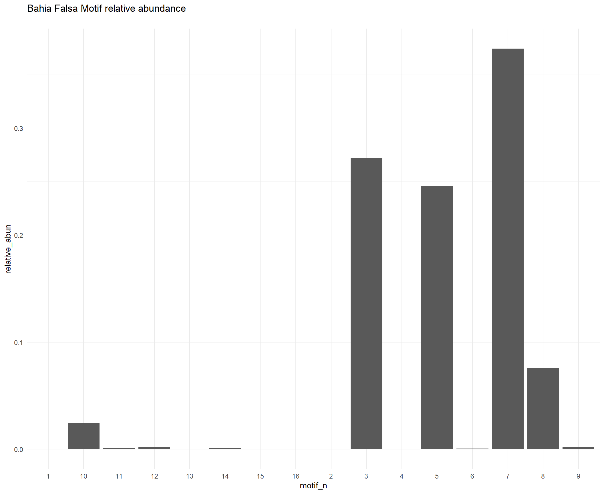 Bahia Falsa distribution of motif’s relative abundance are similar to Otago’s food web.
3. Network projections
As described below, we can create a one-mode projection from the two-mode bipartite graph with a simple step from linear algebra, namely matrix multiplication. There are two possible one-mode projections, one onto the groups and the other onto the nodes, depending on the order of the matrix product.
We can project the incidence matrix by multiplying it with its transpose.
3.1. One way of projection
# Original
networklevel(memmott1999, index='connectance')connectance
0.1513924 # Project plants
# Recall that the logical step '> 0' converts the original matrix into a binary one. Then 'tcrossprod' performs thee multiplication of the matrix with its transpose, to get the number of shared pollinators
plants_projected <- tcrossprod(memmott1999>0)
# In addition, we set the diagonal elements equal to zero, because Pii is otherwise the number of groups that node i belongs to
diag(plants_projected) <- 0
g <- graph.adjacency(plants_projected, mode = 'undirected', weighted = T)
par(mar=c(0,0,0,0))
plot(g)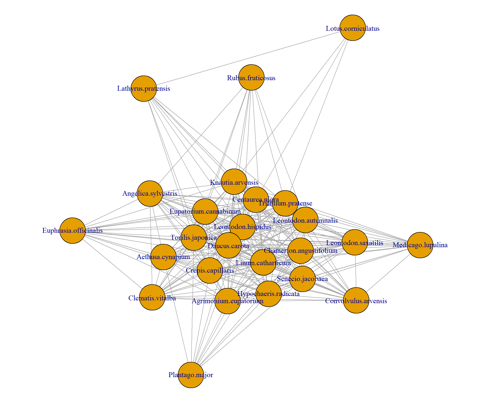
plot(g, vertex.size=6, vertex.label=NA, edge.color='black', edge.width=log(E(g)$weight), layout=layout.circle, main="Unipartite_plant")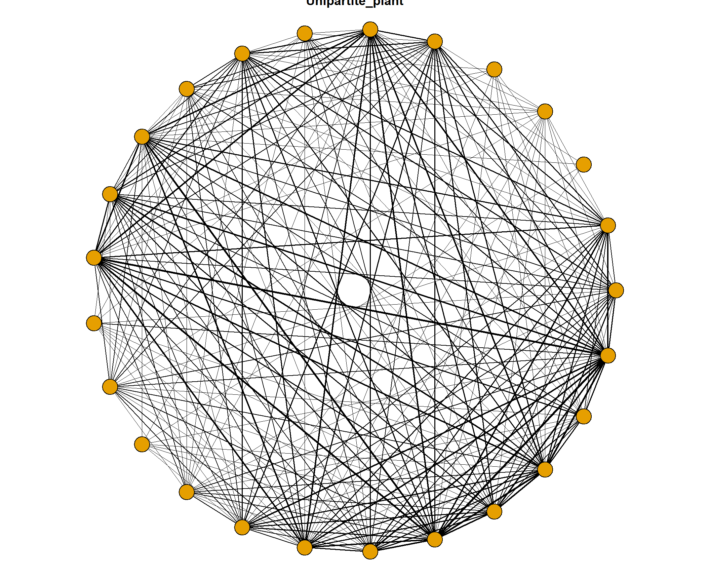
qplot(E(g)$weight)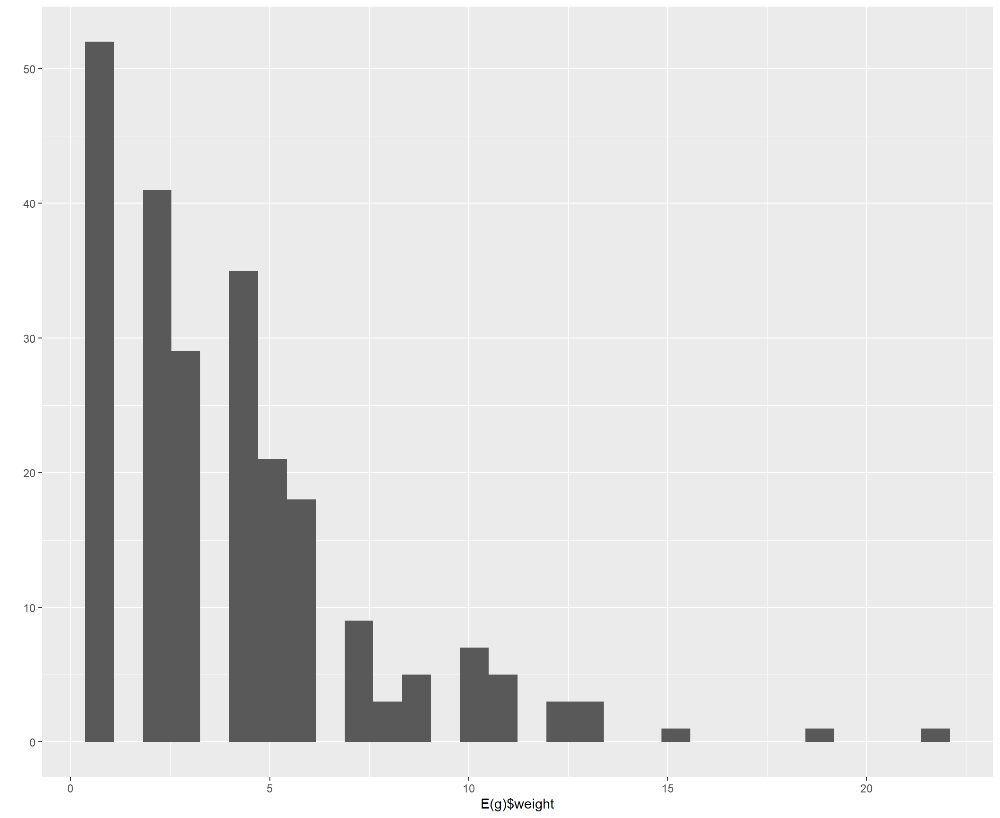
Problem 10. Try to project the pollinators and plot the degree distribution of this projection (use your code for question 1).
# Project pollinators
# Recall that the logical step '> 0' converts the original matrix into a binary one. Then 'tcrossprod' performs thee multiplication of the matrix with its transpose, to get the number of shared pollinators
pollinators_projected <- tcrossprod(t(memmott1999)>0)
# In addition, we set the diagonal elements equal to zero, because Pii is otherwise the number of groups that node i belongs to
diag(pollinators_projected) <- 0
g2 <- graph.adjacency(pollinators_projected, mode = 'undirected', weighted = T)
par(mar=c(0,0,0,0))
plot(g2)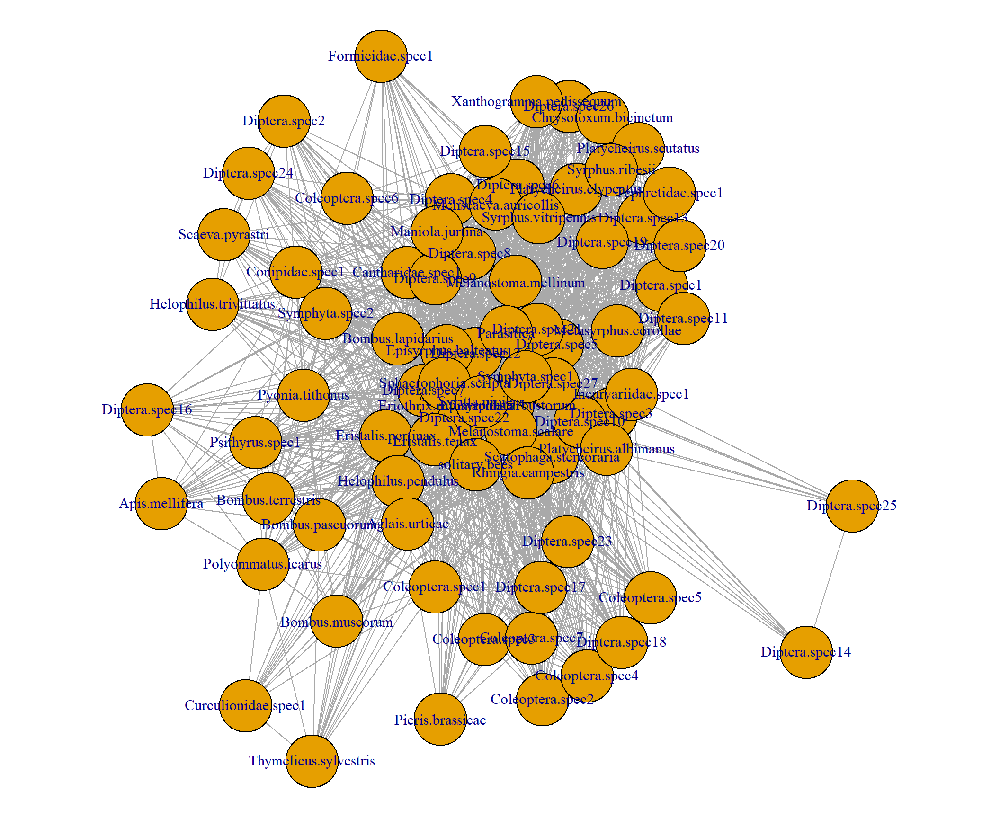
plot(g2, vertex.size=6, vertex.label=NA, edge.color='black', edge.width=log(E(g)$weight), layout=layout.circle, main="Unipartite_pollinator")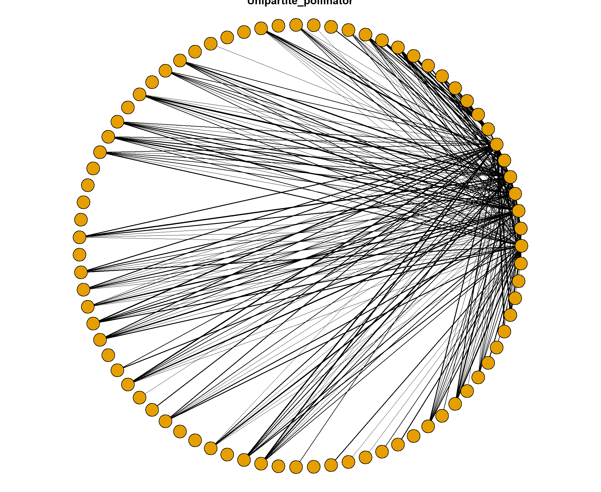
qplot(E(g2)$weight)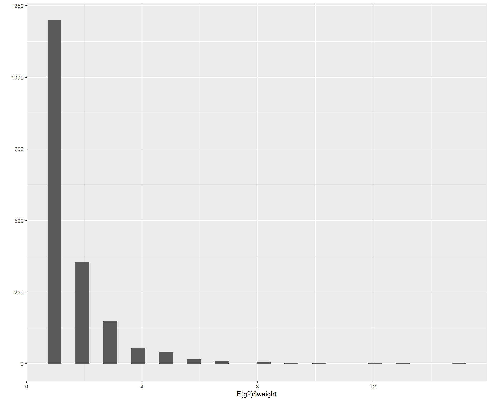
# Degree distribution
# make adjacency matrix
A_pol <- as_adjacency_matrix(g2)
class(A_pol)[1] "dgCMatrix"
attr(,"package")
[1] "Matrix"dim(A_pol)[1] 79 79# in-degree
in_degree <- rep(0,dim(A_pol)[1])
for (i in 1:dim(A_pol)[1]){
in_degree[i] <- sum(A_pol[i,])
}
in_degree [1] 44 33 36 33 33 28 35 63 16 45 22 57 57 35 62 51 62 73 58 58 58 45 75 45 8
[26] 51 19 37 33 45 76 45 61 78 38 22 8 45 45 65 45 70 76 60 74 53 22 54 66 51
[51] 49 57 46 45 62 22 76 76 45 51 45 61 26 34 30 30 19 68 24 68 43 71 26 38 17
[76] 57 53 16 48# out-degree
out_degree <- rep(0,dim(A_pol)[2])
for (j in 1:dim(A_pol)[2]){
out_degree[j] <- sum(A_pol[,j])
}
out_degree [1] 44 33 36 33 33 28 35 63 16 45 22 57 57 35 62 51 62 73 58 58 58 45 75 45 8
[26] 51 19 37 33 45 76 45 61 78 38 22 8 45 45 65 45 70 76 60 74 53 22 54 66 51
[51] 49 57 46 45 62 22 76 76 45 51 45 61 26 34 30 30 19 68 24 68 43 71 26 38 17
[76] 57 53 16 48# Now we use a dataframe to make the plot.
df_A <- data.frame(deg=c(out_degree,in_degree), direction=c(rep('out',length(out_degree)),rep('in',length(in_degree))))
ggplot(df_A, aes(deg, fill=direction)) + geom_histogram(alpha=0.3, binwidth=1)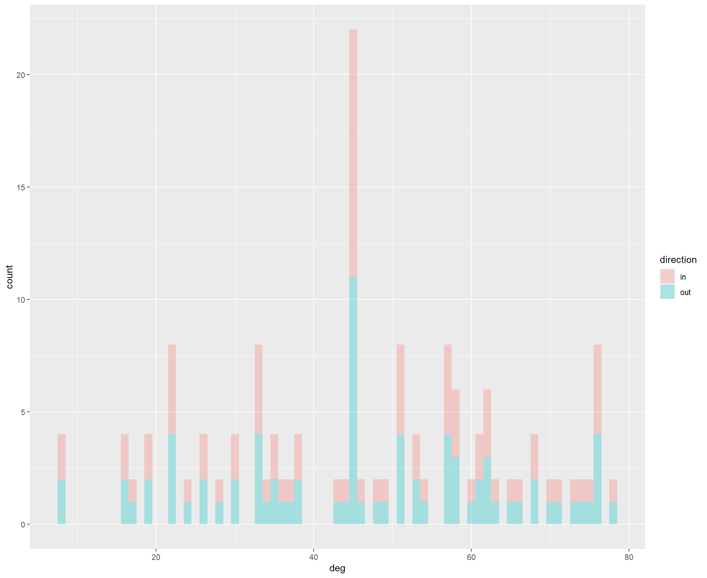
3.2. Another projection method
bi-adjacency matrix of a bipartite graph. This is a symmetric (and somewhat redundant) matrix with 0s between species of the same trophic level.
plants_projected <- as.one.mode(memmott1999, project = 'full')
dim(plants_projected)[1] 104 104# lower = g x g matrix for g plants / higher = n x n matrix for n pollinators
plants_projected <- as.one.mode(memmott1999, project = 'lower')
dim(plants_projected)[1] 25 25g3 <- graph.adjacency(plants_projected, mode = 'undirected', weighted = T)
plot(g3,layout=layout.circle, main='Unipartite_plant')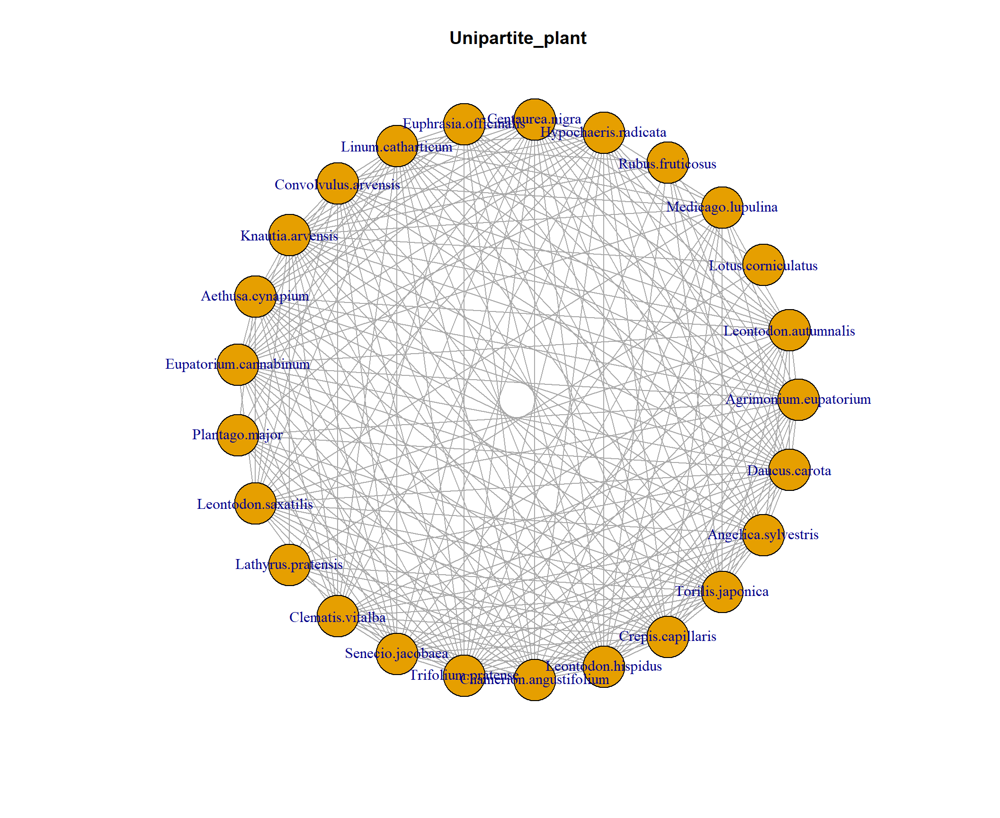
qplot(E(g3)$weight)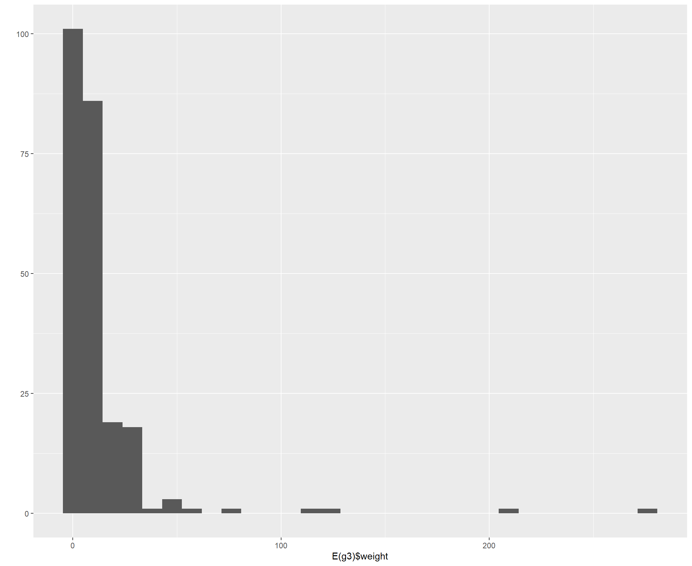
Problem 11. What information do we lose when projecting?
We lose the information of which plant interacts with which pollinator (if we are projecting on to the plants) and vice versa for the projection to the pollinators.
Problem 12. What can you say about the density of the projected networks?
par(mfrow=c(1,2))
plot(g, vertex.size=6, vertex.label=NA, edge.color='black', edge.width=log(E(g)$weight), layout=layout.circle, main="Unipartite_plant")
plot(g2, vertex.size=6, vertex.label=NA, edge.color='black', edge.width=log(E(g)$weight), layout=layout.circle, main="Unipartite_pollinator")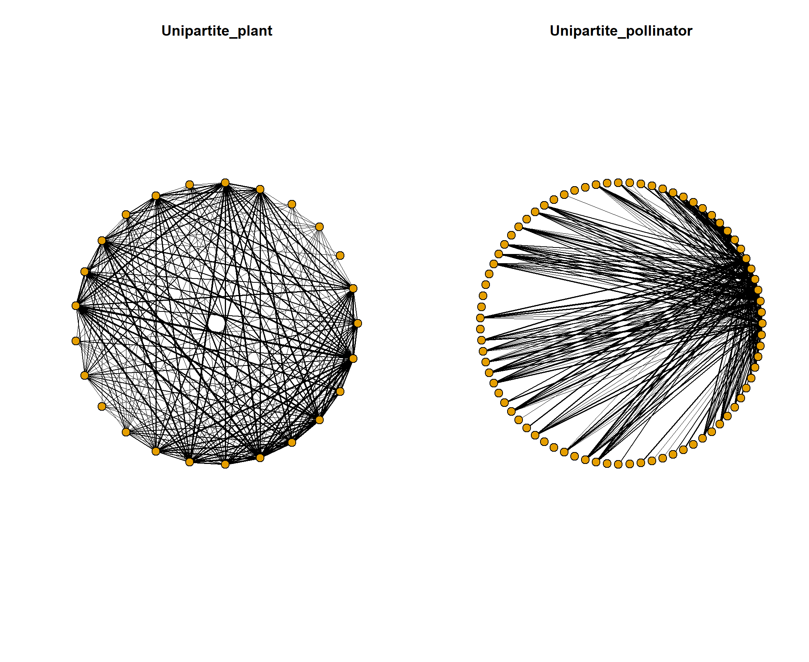 By comparing these two graphs of unipartite projections of plants and pollinators, we can see that the density of the projected networs depends on the direction(partition, species) of projection. Pollinator’s unipartite graph appears to be much more “dense” compared to that of plant’s, because the links are concentrated on small portion of the pollinator species.
Problem 13. What is the ecological interpretation of the projections of a host-parasite network?
If we project and create a network of the host, the node with the higher degree(or centrality) means that it could be the good vector for transmitting parasites. So, it could be called a bridge species of paracites. Higher centrality could also mean that the node could be interacting more and coming to contact more often with other hosts.
4. Bipartite networks
4.1 Some basic network metrics
Going further, Dormann et al. (2009, The Open Ecology Journal) classified bipartite network metrics into:
Metrics based on unweighted links Metrics based on weighted links
Here are a few examples (see comments in code to learn what these are)
# Connectance
data(olesen2002flores) # Check out the help for information on this data set!
olesen2002flores_binary <- 1 * (olesen2002flores > 0) # Make the data binary (unweighted)
I <- nrow(olesen2002flores_binary) # Number of lower level species (e.g., hosts, plants)
J <- ncol(olesen2002flores_binary) # Number of higher level species (e.g., parasites, pollinators)
S <- I + J # Total number of species, aka: Network size
L <- sum(olesen2002flores_binary > 0) # Number of edges in the network
A_i <- rowSums(olesen2002flores_binary) # The degree of hosts
A_j <- colSums(olesen2002flores_binary) # The degree of parasites
C <- L / (I * J) # ConnectanceNotice that the following clustering coeffcients are defined at the local level, that is, for each species.
cc_high <- colSums(olesen2002flores_binary) / nrow(olesen2002flores_binary) # Clustering coefficient higher level (the number of realized links divided by the number of possible links for each species)
cc_low <- rowSums(olesen2002flores_binary) / ncol(olesen2002flores_binary) # Clustering coefficient lower level (the number of realized links divided by the number of possible links for each species)In a weighted network we can use strength instead of degree:
S_i <- rowSums(olesen2002flores) # Node strength of hosts
S_j <- colSums(olesen2002flores) # Node strength of parasitesProblem 14. Try to calculate these metrics for the memmott1999 data.
# Connectance
data(memmott1999) # Check out the help for information on this data set!
memmott1999_binary <- 1 * (memmott1999 > 0) # Make the data binary (unweighted)
I <- nrow(memmott1999_binary) # Number of lower level species (e.g., hosts, plants)
J <- ncol(memmott1999_binary) # Number of higher level species (e.g., parasites, pollinators)
S <- I + J # Total number of species, aka: Network size
L <- sum(memmott1999_binary > 0) # Number of edges in the network
A_i <- rowSums(memmott1999_binary) # The degree of hosts
A_j <- colSums(memmott1999_binary) # The degree of parasites
C <- L / (I * J) # Connectance
C[1] 0.1513924cc_high <- colSums(memmott1999_binary) / nrow(memmott1999_binary) # Clustering coefficient higher level (the number of realized links divided by the number of possible links for each species)
# cc_high
cc_low <- rowSums(memmott1999_binary) / ncol(memmott1999_binary) # Clustering coefficient lower level (the number of realized links divided by the number of possible links for each species)
# cc_low
S_i <- rowSums(memmott1999) # Node strength of hosts
S_j <- colSums(memmott1999) # Node strength of parasitesProblem 15. Can you plot the degree and strength distributions?
# Degree of hosts
histogram(A_i, breaks = 30, main = "Degree of hosts" )
# Degree of parasites
histogram(A_j, breaks = 30, main = "Degree of parasites" )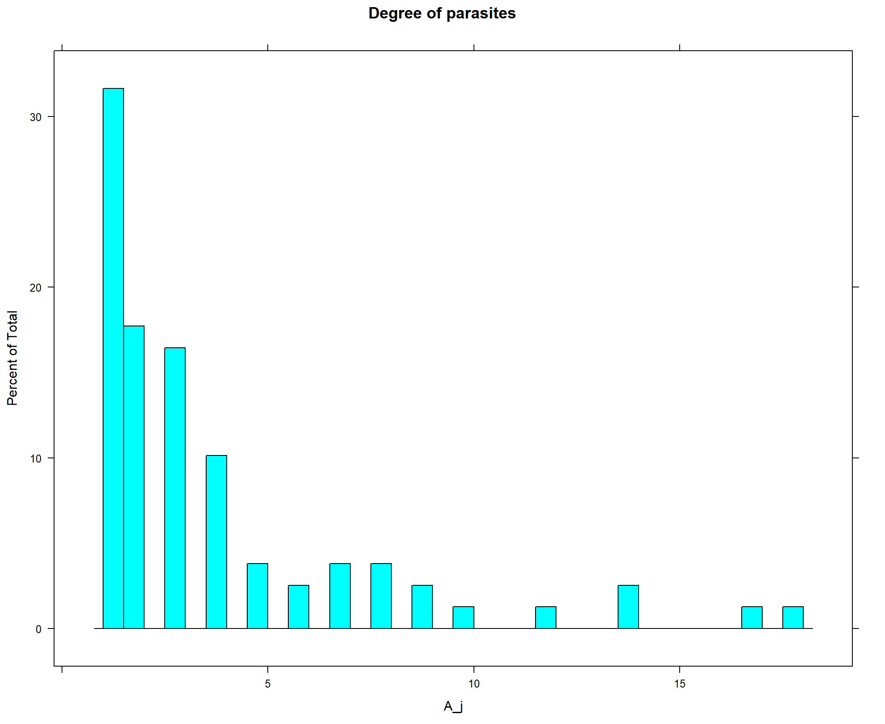
# Node strength of hosts
histogram(S_i, breaks = 30, main = "Strength of hosts" )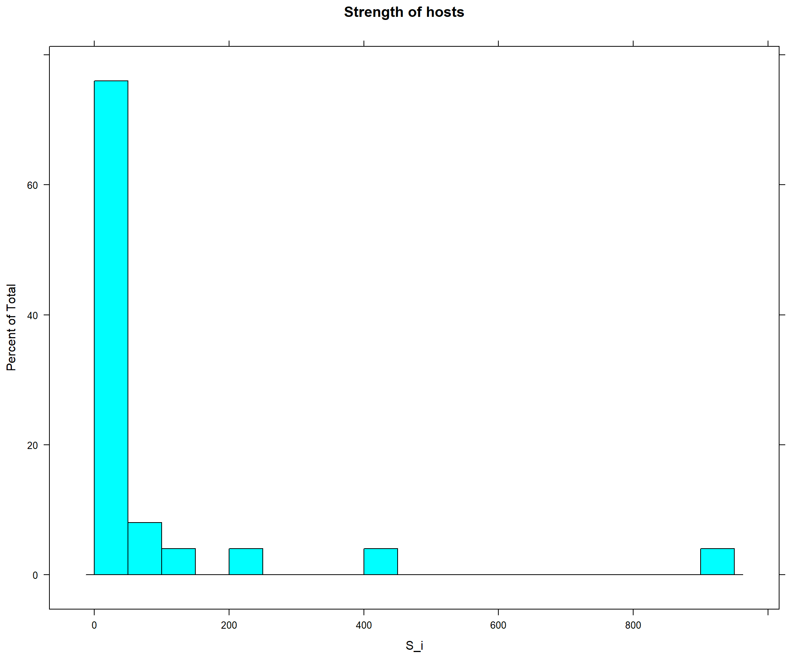
# Node strength of parasites
histogram(S_j, breaks = 30, main = "Strength of parasites" )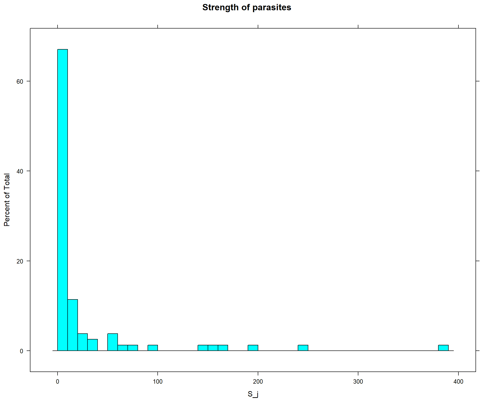
4.2 Built-in metrics in bipartite
# Network level
nl_metrics <- networklevel(olesen2002flores)
nl_metrics connectance web asymmetry
0.25000000 0.09090909
links per species number of compartments
1.36363636 1.00000000
compartment diversity cluster coefficient
NA 0.25000000
nestedness NODF
26.73800218 35.96096096
weighted nestedness weighted NODF
0.41482111 23.27327327
interaction strength asymmetry specialisation asymmetry
0.06921118 -0.03946187
linkage density weighted connectance
3.08343699 0.14015623
Fisher alpha Shannon diversity
5.64808587 2.99270826
interaction evenness Alatalo interaction evenness
0.62510985 0.76748398
H2 number.of.species.HL
0.53335441 12.00000000
number.of.species.LL mean.number.of.shared.partners.HL
10.00000000 0.71212121
mean.number.of.shared.partners.LL cluster.coefficient.HL
0.82222222 0.38586479
cluster.coefficient.LL weighted.cluster.coefficient.HL
0.37152473 0.27012517
weighted.cluster.coefficient.LL niche.overlap.HL
0.21485594 0.22887547
niche.overlap.LL togetherness.HL
0.22052649 0.14962121
togetherness.LL C.score.HL
0.15347222 0.53114478
C.score.LL V.ratio.HL
0.54552469 1.47457627
V.ratio.LL discrepancy.HL
1.73469388 14.00000000
discrepancy.LL extinction.slope.HL
14.00000000 2.61620630
extinction.slope.LL robustness.HL
2.18719834 0.72029940
robustness.LL functional.complementarity.HL
0.67479868 900.42713645
functional.complementarity.LL partner.diversity.HL
854.64456938 0.93256402
partner.diversity.LL generality.HL
1.10133819 2.75051685
vulnerability.LL
3.41635714 # group level -> problem 16
# Species level -> problem 17Problem 16. Try to calculate and access metrics at the species level. Use help to understand which metrics bipartite has implemented.
sl_metricsError in eval(expr, envir, enclos): object 'sl_metrics' not found# help(specieslevel)Problem 17. Try to calculate and access metrics at the group level. Use help to understand which metrics bipartite has implemented.
gl_metricsError in eval(expr, envir, enclos): object 'gl_metrics' not found# help(grouplevel)5. Suggested reading
Some papers which develop or explain specific metrics:
Bersier L-F, Banašek-Richter C, Cattin M-F. Quantitative Descriptors of Food-Web Matrices. Ecology. Ecological Society of America; 2002; 83:2394–2407.
Blüthgen N, Menzel F, Blüthgen N. Measuring specialization in species interaction networks. BMC Ecol. 2006;6: 9.
Martín González AM, Dalsgaard B, Olesen JM. Centrality measures and the importance of generalist species in pollination networks. Ecol Complex. 2010; 7:36–43.
Poisot T, Canard E, Mouquet N, Hochberg ME. A comparative study of ecological specialization estimators. Methods Ecol Evol. 2012; 3:537–544.
For more details on projections you can see Mark Newman’s book: Networks an introduction (Section 6.6).
sessionInfo()R version 4.0.3 (2020-10-10)
Platform: x86_64-w64-mingw32/x64 (64-bit)
Running under: Windows 10 x64 (build 19042)
Matrix products: default
locale:
[1] LC_COLLATE=English_United States.1252
[2] LC_CTYPE=English_United States.1252
[3] LC_MONETARY=English_United States.1252
[4] LC_NUMERIC=C
[5] LC_TIME=English_United States.1252
attached base packages:
[1] stats graphics grDevices utils datasets methods base
other attached packages:
[1] scatterplot3d_0.3-41 ggpubr_0.4.0 ggplot2_3.3.3
[4] dplyr_1.0.4 bipartite_2.16 sna_2.6
[7] network_1.16.1 statnet.common_4.4.1 vegan_2.5-7
[10] lattice_0.20-41 permute_0.9-5 igraph_1.2.6
[13] workflowr_1.6.2
loaded via a namespace (and not attached):
[1] nlme_3.1-149 fs_1.5.0 rprojroot_2.0.2 tools_4.0.3
[5] backports_1.2.1 bslib_0.2.4 utf8_1.1.4 R6_2.5.0
[9] DBI_1.1.1 mgcv_1.8-33 colorspace_2.0-0 withr_2.4.1
[13] tidyselect_1.1.0 curl_4.3 compiler_4.0.3 git2r_0.28.0
[17] labeling_0.4.2 sass_0.3.1 scales_1.1.1 stringr_1.4.0
[21] digest_0.6.27 foreign_0.8-80 rmarkdown_2.7 rio_0.5.26
[25] pkgconfig_2.0.3 htmltools_0.5.1.1 highr_0.8 maps_3.3.0
[29] rlang_0.4.10 readxl_1.3.1 jquerylib_0.1.3 farver_2.1.0
[33] generics_0.1.0 jsonlite_1.7.2 zip_2.1.1 car_3.0-10
[37] magrittr_2.0.1 dotCall64_1.0-1 Matrix_1.2-18 Rcpp_1.0.5
[41] munsell_0.5.0 fansi_0.4.2 abind_1.4-5 lifecycle_1.0.0
[45] stringi_1.5.3 whisker_0.4 yaml_2.2.1 carData_3.0-4
[49] MASS_7.3-53 grid_4.0.3 parallel_4.0.3 promises_1.1.1
[53] forcats_0.5.1 crayon_1.4.1 haven_2.3.1 splines_4.0.3
[57] hms_1.0.0 knitr_1.31 pillar_1.5.1 ggsignif_0.6.1
[61] rle_0.9.2 glue_1.4.2 evaluate_0.14 data.table_1.14.0
[65] vctrs_0.3.6 spam_2.6-0 httpuv_1.5.4 cellranger_1.1.0
[69] gtable_0.3.0 purrr_0.3.4 tidyr_1.1.2 assertthat_0.2.1
[73] xfun_0.20 openxlsx_4.2.3 broom_0.7.5 coda_0.19-4
[77] rstatix_0.7.0 later_1.1.0.1 tibble_3.0.4 fields_11.6
[81] cluster_2.1.0 ellipsis_0.3.1